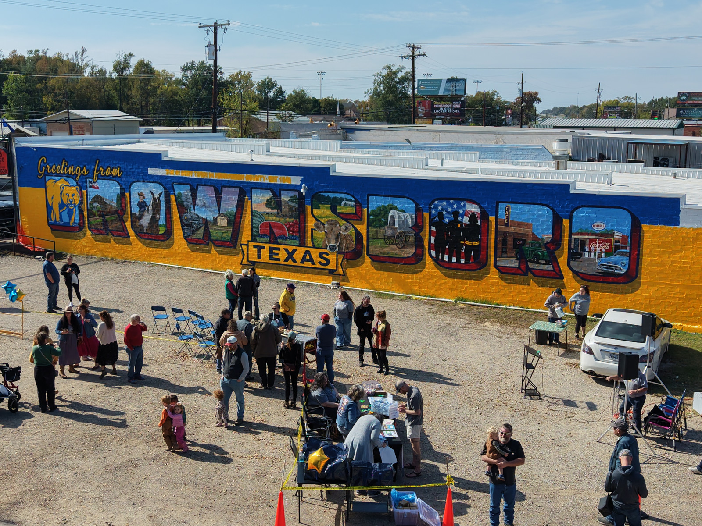
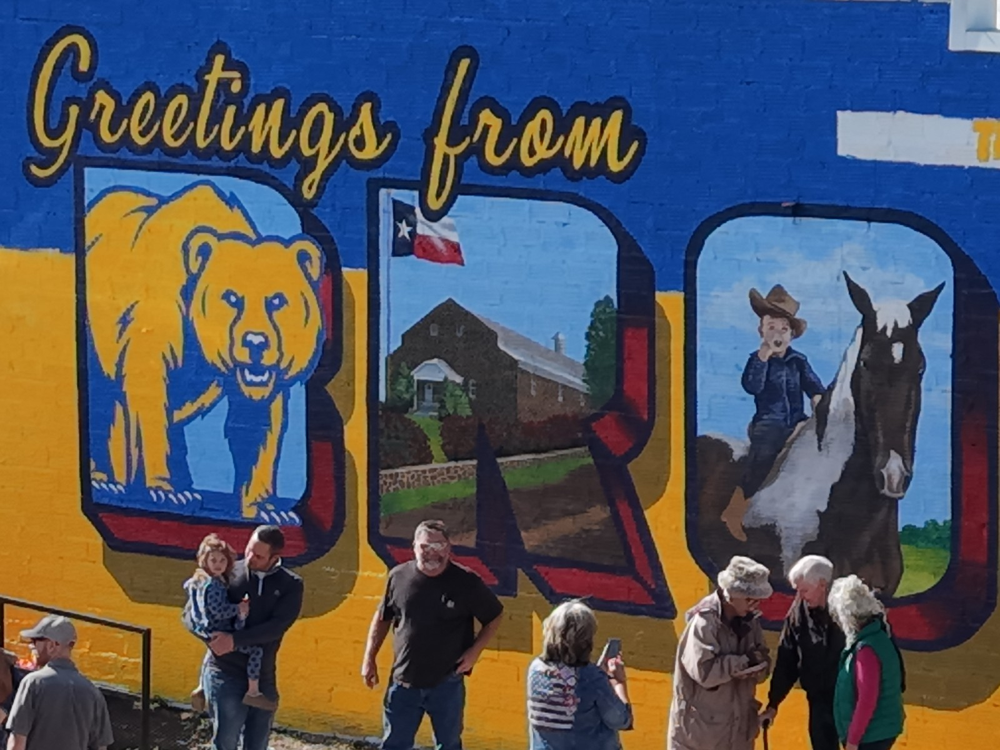
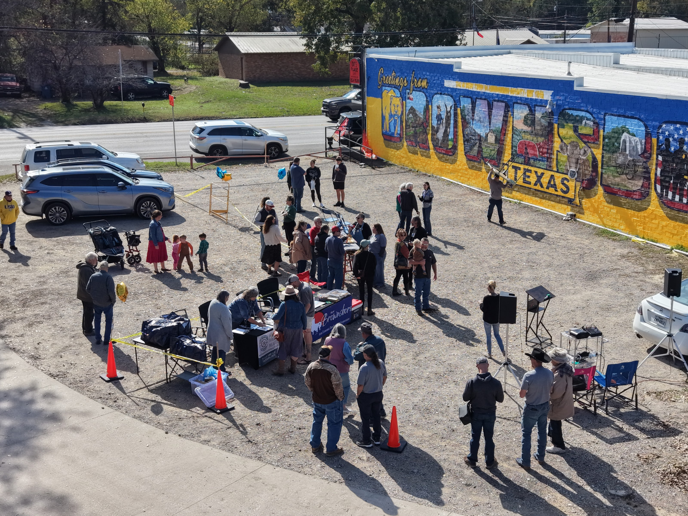

Neighbor Story · Brownsboro
Brownsboro’s Got It: Neighbors See Their History in the New Keep Brownsboro Beautiful Mural
A new welcome stretches across downtown, and on reveal day neighbors stood in front of their history — proud of the town they call home.

The Keep Brownsboro Beautiful mural is up, and downtown has a new welcome. “Greetings from BROWNSBORO TEXAS” now stretches across the wall, a postcard of the town painted large enough that anyone rolling in can see it. On the day it was unveiled, neighbors gathered in the lot to look at their history, stand in front of it, and celebrate a place they are proud to call home.
In each letter is a scene from Brownsboro — a bear, a boy on a horse, a train, a wagon, and other pictures of the town. The mural was imagined as a postcard, then filled with those scenes of home.
In one of those letters is a boy on a horse. Jack Tompkins, who is 90, is that boy. His daughter, Rebecca Tompkins Holland, put it simply: her dad “is actually the first O in Brownsboro.” She and his five children were glad to be there and to see the legacy of the farming community preserved. They grew up on road trips with no TV in the car, she said, because their parents wanted them to listen to the family’s stories — stories about Brownsboro, their family, and the founding of the town.
Jack’s wife, Janet, was excited that all five of their children and their grandchildren would be there. They have been married 45 years in June. Looking at the painted boy on the horse, she said the artist had never seen any of their grandchildren, “but it looks identical to one of our grandsons.” Jack still talks about good health and a long life ahead. Family around him even hope he might represent Brownsboro again at the 2036 centennial, after being taken as a newborn to the Texas Centennial in 1936.
The wall holds more than one family’s story. It took a muralist, a helper, and a town that wanted it done well.

Kerian Massey, working with Allison Matlock, brought the wall to life. “They wanted me to add different scenes from the town so they gave me a bunch of ideas and then I kind of curated it into each letter,” Kerian said. Allison helped along the wall, putting in shadows and lines. Each letter took about three or four days, and weather and a hard surface stretched the work. From start to finish, the painting itself took about a month and a half — beginning the first of October and running up to the day before the unveiling, with a little finishing work still to do.
The larger project had been years in the making. Brooke Foster, president of the Brownsboro Area Economic Development Corporation, said they knew that if they wanted to do it, they were going to have to spend the money to get it done well. When fundraising through Keep Brownsboro Beautiful did not quite carry it, the EDC stepped in so the mural could be done beautifully. The corporation’s purpose, Brooke said, is to affect economic growth and the quality of life of the town’s citizens — to make the downtown business district more attractive, and to bring town pride and town unity. “She did a great job,” Brooke said of Kerian.

For Brooke, the mural is personal. “I am the fifth generation to grow up here and my son is the sixth generation,” she said. Her son, Rhett, is 16. Her great-great-great-grandparents came at the turn of the century, and the family still lives in the house they built. “It’s a heart project for me,” she said. She is glad God worked things out the way He did, because she loves Brownsboro and cares about keeping the town, and the school, thriving for the generations still coming.
At the last football game, people kept walking up to tell her the mural was looking amazing. She loves that you cannot help but see it.
“When those opposing teams come rolling into town, I want them to see this mural and be like, oh wow, Brownsboro’s got it.”
It is, she said, a point of community, pride, and love.
That welcome is for anyone who wants to share it. On Saturday, Nov. 21, Keep Brownsboro Beautiful is hosting a community dinner for anybody who wants to come, including neighbors who might not be able to afford Thanksgiving dinner. They try to do that every year, Brooke said, because food is a way to everybody’s heart. Mural merchandise is planned to be set up at the dinner, and likely at the Christmas tree lighting.
Come see the wall. Come sit down to dinner. Soon, Brooke said, they will be moving on to the next project — so they can keep making Brownsboro a great place to live, go to school, start a business, and raise a family.